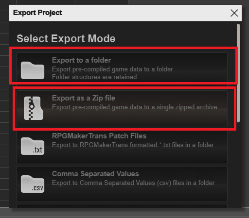

This page walks through a complete translation: open a game, parse it into the grid, translate it, wrap the text, export the translation into your game copy, and test it.
Start a New Project (or the New Project toolbar button). The wizard opens at Select project type.RPG Maker XP, VX, Ace, MV & MZ Parser.Select the game, pick the game's executable file — Game.exe on Windows, or the nw / Game / start.sh launcher of a Linux port. SLR Translator analyzes it and shows the result under Detected engine / type — see Engine Detection for what it looks for.Create a development copy (marked (required)). Pick a Set development directory outside the original game folder — the tool unpacks an editable copy there.Create project!. Parsing runs, and the project opens in the editor. Review any reported errors, then close the summary.
The project wizard: select the RPG Maker parser entry.

Select the game executable; the detected engine type appears automatically.

After creation: review any errors and click Close.
To reopen existing work later, use Open Project or the Open toolbar button and pick your .slrproj file — you can also drop a .slrproj file directly onto the main window.
Parsing extracts every translatable text from the game into a grid: one row per text, with the original text on the left and translation columns to the right of it. The Objects panel on the left lists the files the text came from; select an object to load its rows into the grid.
For RPG Maker games (MV, MZ, XP, VX and VX Ace), parsing also builds the Scene Graph — the dialogue tracing that later keeps conversations together during batch translation. Its panel opens automatically right after project creation so you can see the traced scenes; reopen it any time with the View Scene Graph (dialogue tracing) toolbar button.
Your whole working state — the grid, notes and project settings, plus the staged copy of the game data — is stored in a single project file with the .slrproj extension. Save it with Ctrl+S or the Save file toolbar button; Save As writes a copy under a new name. Automatic backups on every save are enabled by default and can be adjusted in the Options window.
The first time the editor opens, SLR offers a very short tour (about 20 seconds) that points out each translation button. If you skip it, you can replay it any time from Tools → Show button tour.
The Home toolbar's translation buttons are labelled: Translation Setup, Glossary, Start Translation, Word Wrap and Export, in the order you use them. (Start Translation is the batch translation button — it translates the whole project at once.) They are the way to translate a project — translating row by row wastes time and tokens and is only for cleanup afterwards.
The cheapest translation is three steps: set up the engine, run Start Translation, then Word Wrap before exporting. The glossary and the QC/Judge review are optional quality improvements.
Translation Setup toolbar button (it opens Options on the DSLR engine panel) and fill in the Quick Start box at the top: API URL, API Key and Model. Press Test connection to confirm — it sends a one-token request and reports what the endpoint replied. Those three fields are all you need; everything below is optional. The shipped defaults are only an example LM Studio setup with a weak model, so change them unless you really are running LM Studio locally. See Translator Setup.Glossary toolbar button — it extracts character names, place names and other recurring terms so you can fix one English rendering per term (see Glossary Extractor). With the DSLR engine, the Auto-Inject Glossary option (on by default) appends the glossary to every translation request automatically, keeping names consistent across the whole game. This costs extra tokens and is worth it mainly on a capable model.Start Translation toolbar button and start the run (see Batch Translation). Dialogue is grouped into scene-coherent requests automatically via the Scene Graph — no setup needed. This is the primary translation step.purple tag, the review's mediumpurple tag, and SHISAYE error codes) and fix individual lines by hand — editing cells directly or with Ctrl+G per selection (see Editor Basics and Context Translation). Manual editing is the cleanup pass, not the starting point.Optionally, enable the QC/Judge review in the engine options (Options → DSLR) to have a second model check the translations during the batch run. Like the glossary it improves quality on capable models but uses many more tokens.
Rows are color-tagged to show what is safe to translate; the tag filter in the export dialog (below) lets you exclude unsafe rows from the final game. See Cell Color Tags.
English lines at Japanese line lengths overflow the game's message windows. Before exporting, run Automatic Word Wrapping from the Word Wrap toolbar button: it re-breaks the translated lines to fit and writes them into Wrapped translations [3], which automatically takes precedence at export. For games that also need a narrower font, see the font sections of the engine pages (MV, MZ).
See Automatic Word Wrapping for the prompt values and options.
When the translation is ready, press the Export Project toolbar button. The Select Export Mode dialog offers:
translation.zip).Next, the Export Options dialog lets you set the Export into path and, depending on the engine, further options:
Click Export Now. The export writes the translated data files — plus the font files the translation references, where the engine supports that — re-encrypting MZ data files if the original game was encrypted. It writes only the translated data: audio, images and the executable are not copied, and there are no copy options. Export into (or unpack the zip into) your own copy of the game, replacing the original data files — keep a backup of the originals.
To export only some files: tick them in the Objects panel, right-click and choose Export into... → A folder or Zipped Game Patch — only the checked files are written.

The Export Project dialog: export to a folder or as a Zip file.
The Import Project toolbar button reuses translations from an existing .slrproj file — ideal for game updates: when a game is re-parsed after an update, importing your old project restores the translations you already completed for all text that is still present.
Overwrite existing cells — off by default, so only empty cells receive the imported translations; turn it on to replace existing content.Case insensitive matching — also ignores case differences and carriage returns when matching rows.Iterate: fix rows in the grid, export again into the same place, and relaunch. When you are happy with the result, the patched game copy is your distributable game.